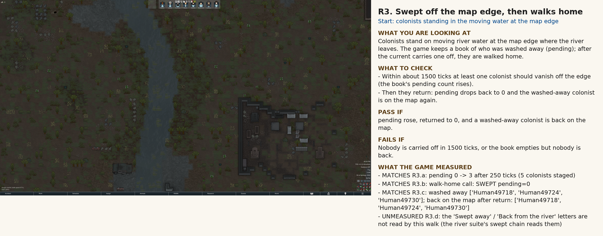
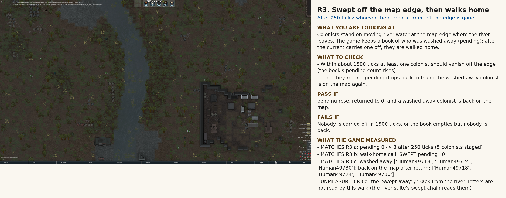

Each scene has caption panels (what you look at, what to check, pass/fail, what the game measured). Tick your answer under each scene; 'Copy my answers as JSON' puts them on the clipboard. Every scene you have run stays on the page; the newest run of a scene replaces its older one.
run 2026-10-17 18:54
What you are looking at. Colonists stand on moving river water at the map edge where the river leaves. The game keeps a book of who was washed away (pending); after the current carries one off, they are walked home.
What to check
Pass if: pending rose, returned to 0, and a washed-away colonist is back on the map.
Fails if: Nobody is carried off in 1500 ticks, or the book empties but nobody is back.
What the game measured
| MATCHES | R3.a: pending 0 -> 3 after 250 ticks (5 colonists staged) |
| MATCHES | R3.b: walk-home call: SWEPT pending=0 |
| MATCHES | R3.c: washed away ['Human49718', 'Human49724', 'Human49730']; back on the map after return: ['Human49718', 'Human49724', 'Human49730'] |
| UNMEASURED | R3.d: the 'Swept away' / 'Back from the river' letters are not read by this walk (the river suite's swept chain reads them) |


R3: note: